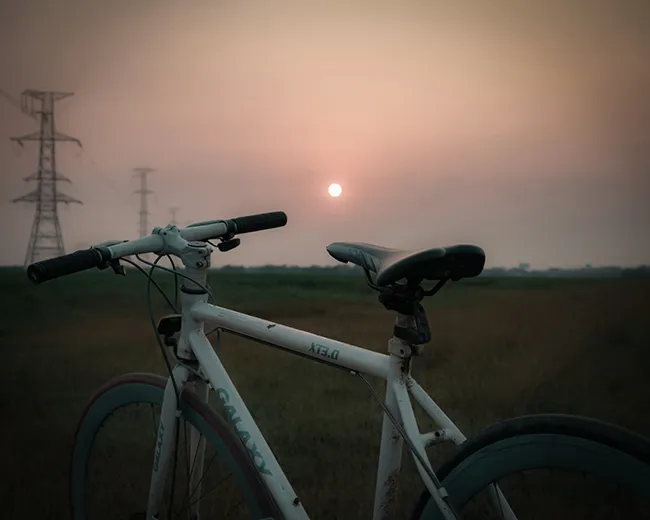
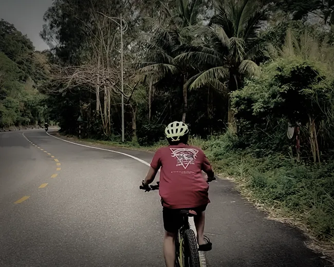

Thói quen sau 4h30 (Phần 2): Sự đình công của thể xác và hành trình chữa lành
Những hóa đơn mà tuổi trẻ vay mượn từ sức khỏe rốt cuộc cũng đến lúc phải thanh toán. Không phải bằng một tiếng nổ lớn, mà bằng sự cạn kiệt âm thầm từ bên trong. Khi cơ thể vật lý bắt đầu lên tiếng đình công, đánh sập mọi nỗ lực kiểm soát của lý trí, tôi mới thực sự hiểu được cái giá của việc bỏ bê chính mình. Hành trình xách xe ra đường mỗi 4h30 chiều không bắt đầu từ một quyết tâm hào nhoáng, mà từ chính sự đổ vỡ lặng lẽ ấy.
Hơi thở mỏng manh và điểm tựa ngày qua ngày
Giai đoạn từ 21 đến 24 tuổi, tôi hứng chịu trọn vẹn hệ lụy từ lối sống vô minh. Mở đầu là lần nhiễm Covid chủng Delta. Nó là một trạng thái đáng sợ mà đến giờ tôi vẫn còn ám ảnh, hơi thở mỏng manh như một sợi chỉ. Ngay khoảnh khắc phải chật vật để lấy oxy vào phổi, tôi nhận ra một sự thật trần trụi: hạnh phúc tột cùng đôi khi chẳng phải là thành tựu gì to tát, mà chỉ đơn giản là được hít một hơi thật sâu mà lồng ngực không đau thắt.
Sau khoảnh khắc đối diện với những lằn ranh vô thường đó, tôi bắt đầu duy trì thói quen đi bộ, đạp xe kết hợp với việc nghe pháp thoại của thiền sư Thích Nhất Hạnh. Những bài giảng về sự chánh niệm, về “đám mây không bao giờ chết”, “hạnh phúc trong từng hơi thở” đã trở thành một điểm tựa tĩnh lặng, giúp tôi duy trì thói quen vận động trôi chảy ngày qua ngày.
Cường giáp và những vòng guồng chân nhẹ lại

Nhưng cơ thể vẫn chưa dừng việc cảnh báo. Tháng 9 năm tôi 23 tuổi, cân nặng sút không phanh, sự mệt mỏi rã rời bám riết lấy từng tế bào. Đỉnh điểm là những lần đang đi dạo, đôi chân bỗng nhiên mất kiểm soát, không còn chút sinh lực nào để nhấc lên, rũ rượi như thể bị liệt. Kết quả khám y tế xác nhận tôi mắc chứng Cường giáp. Bệnh lý chuyển hóa này đã vắt kiệt toàn bộ nguồn năng lượng dự trữ của cơ thể.
Tuy nhiên, ở một góc nhìn khác, chính căn bệnh này lại mang đến một sự điều chỉnh tích cực. Cường giáp tước đi của tôi khả năng bung sức, ép tôi không thể đạp xe một cách hùng hục hay bạo lực như trước kia. Để tiếp tục thói quen, tôi buộc phải đạp chậm lại. Những vòng guồng chân trở nên nhẹ nhàng, đều đặn và hoàn toàn nương theo sức bền của cơ thể.
Tôi lặp đi, lặp lại giờ bắt đầu đạp xe, thói quen đạp và cả cung đường đạp xe. Có những lần, vì quá mải mê đắm chìm trong trạng thái tĩnh tại ấy, tôi đạp xe từ 4h30 chiều đến tận 9h đêm. Người ngoài nhìn vào có thể thấy sự lặp lại ấy thật tẻ nhạt. Nhưng khi cảnh vật bên ngoài được cố định, tôi lại phát hiện ra một sự thật: không có ngày nào thực sự giống ngày nào. Hôm nay hình thù đám mây đã khác, vạt nắng đã xê dịch, những bông hoa mới hôm qua chỉ vừa hé nụ mà hôm nay đã khoe sắc thắm đỏ rực, và tâm thế của tôi trong mỗi vòng đạp cũng đang chuyển hóa. Nhịp điệu cơ học nhẹ tênh ấy đã kéo tôi về trọn vẹn với hiện tại.
Mỏ neo nội tại và sự chuyển hóa

Sự kiên trì trong vô thức, không phán xét và không ép uổng ấy đã mang lại một kết quả mà mọi nỗ lực kiểm soát trước đây đều thất bại. Chỉ sau một tháng kết hợp điều trị và duy trì nhịp đạp xe nhẹ nhàng, chỉ số Cường giáp của tôi đã trở về mức bình thường. Đáng ngạc nhiên hơn, tôi duy trì được sự ổn định đó suốt hơn 2 năm tiếp theo (là đến giai đoạn hiện tại). Sức bền của cơ thể tự động tăng lên một cách bền bỉ. Thật ra cũng có một lần cơn bão giáp ập đến khiến tôi bị lung lay, nhưng có nền tảng, có mỏ neo, rồi mọi thứ sẽ trở lại như cách nó vốn là.
Chiếc xe đạp giờ đây đã vượt ra khỏi ý nghĩa của một phương tiện. Cùng với tư duy tối giản để gỡ bỏ những mong cầu dư thừa, thói quen xách xe ra đường lúc 4h30 chiều đã tạo thành một tấm khiên vững chắc, bảo vệ tâm trí tôi trước những xung động ngột ngạt của đời sống.